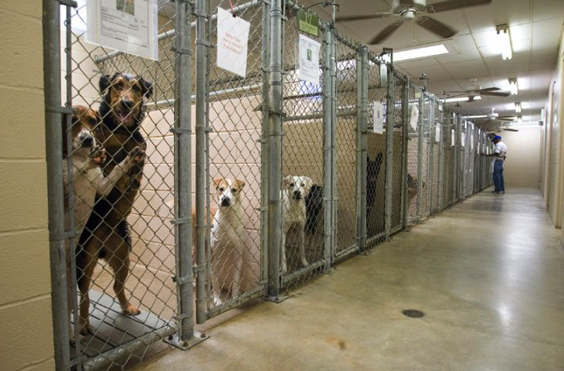

Home
Why Adopt?
Statistics
Contact
Where to Adopt
Save A Life. Adopt Today.
Adoption Opportunities near the Rochester Area:
Lollipop Farm
- 99 Victor Road Fairport, NY 14450
- Phone: (585) 223-1330
Joyful Rescues
- Webster PetSmart Every Saturday from 11:00am - 2:00pm
- 917 Holt Rd Webster, NY 14580
- Webster PetSmart Phone: (585) 872-0850
Pet Adoption Network
- 4261 Culver Road, Rochester, New York 14622
- Phone: (585) 338-9175
Happy Tails Humane Society
- 2976 County Road 48, Canandaigua, New York 14424
- Phone: (585) 396-4590
Animal Service League
- 10 Dubelbeiss Lane, Rochester, New York 14622
- Phone: (585) 342-6099
Verona Street Animal Services
- 184 Verona Street, Rochester, New York 14608
- Phone: (585) 428-7274
